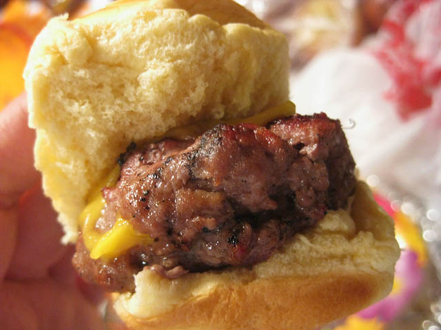

Sliders

Beef Sliders by Chef John
Here is a recipe from Chef John on Allrecipes.com for making beef sliders!
Main Ingredients
- 1 pound ground beef
- 16 paper muffin liners
- Salt and ground black pepper to taste
Secret Sauce Ingredients
- 2 tablespoons mayonnaise
- 1 tablespoon ketchup
- 1 tablespoon Dijon mustard
- 1 tablespoon sweet pickle relish
Steps
- Place ground beef onto a work surface; divide into 8 equal-size pieces...
- Sprinkle bottoms of paper liners with salt and black pepper. Form each piece of burger into a rough ball and place into a muffin cup. Season tops with salt and pepper.
- Place a second paper liner on top of each piece of meat and gently press it down to shape the mini burger into a round, flat shape. Pull off the paper tops and remove burgers from the muffin cups; remove bottom paper liners from burgers.
- Heat a large nonstick skillet over medium-high heat. Cook burgers in the hot skillet until they have a browned crust and are slightly pink in the middle, about 3 minutes per side. Flip burgers and cook 3 minutes on other side. Remove burgers to a plate to rest for 2 minutes.
- Mix mayonnaise, ketchup, mustard, and pickle relish in a bowl; spoon a dollop onto each bun. Place burgers onto buns, season with more black pepper, and top with a tomato slice. Close buns and serve.